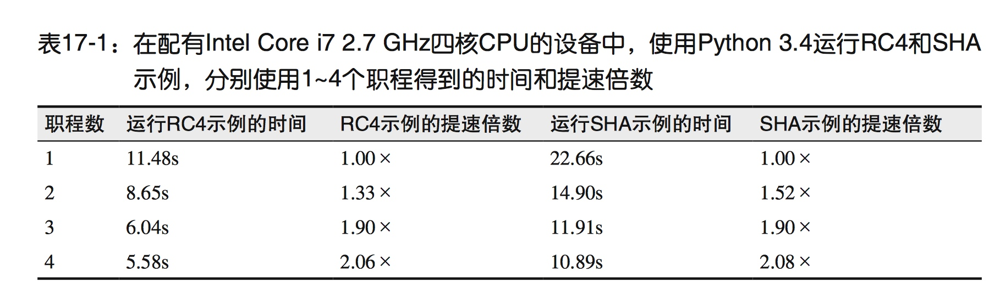
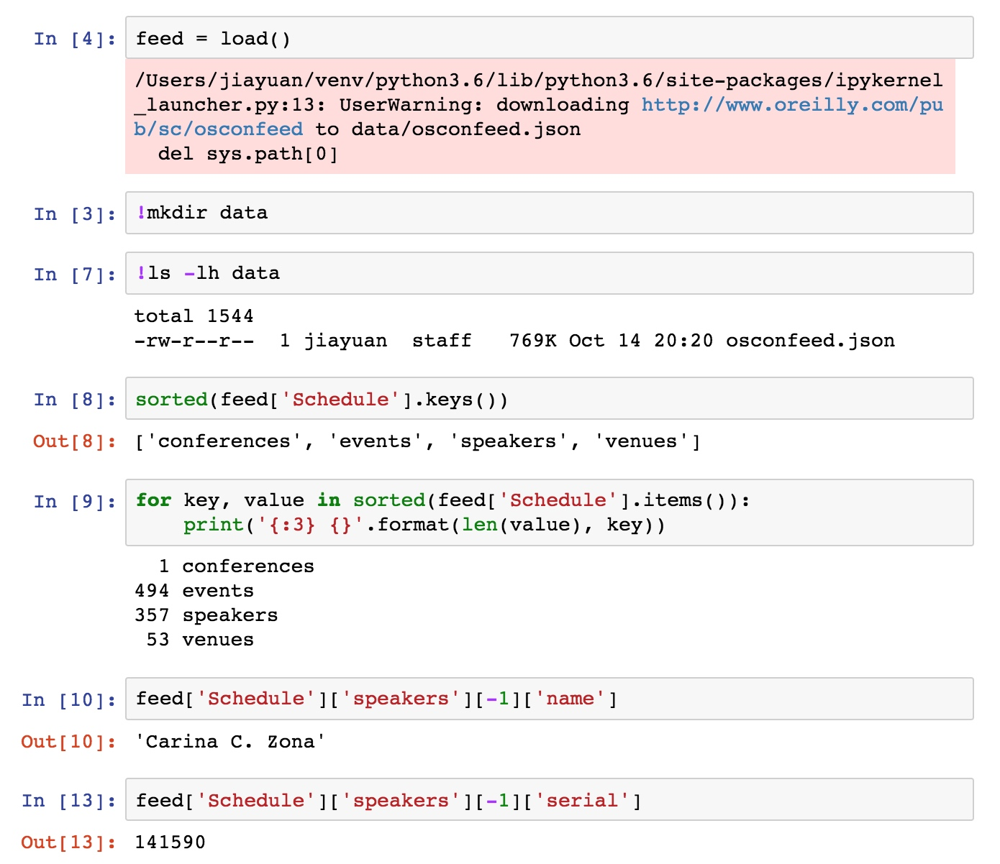
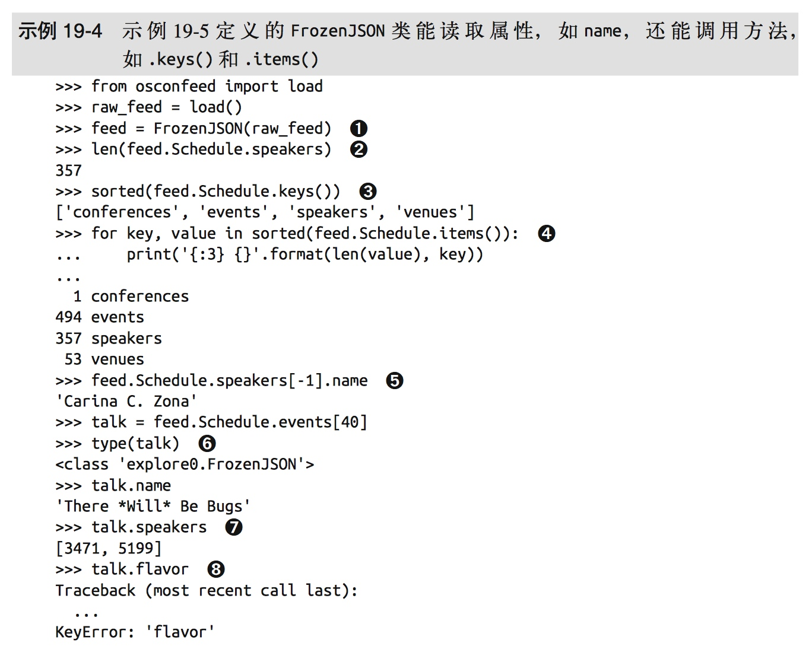
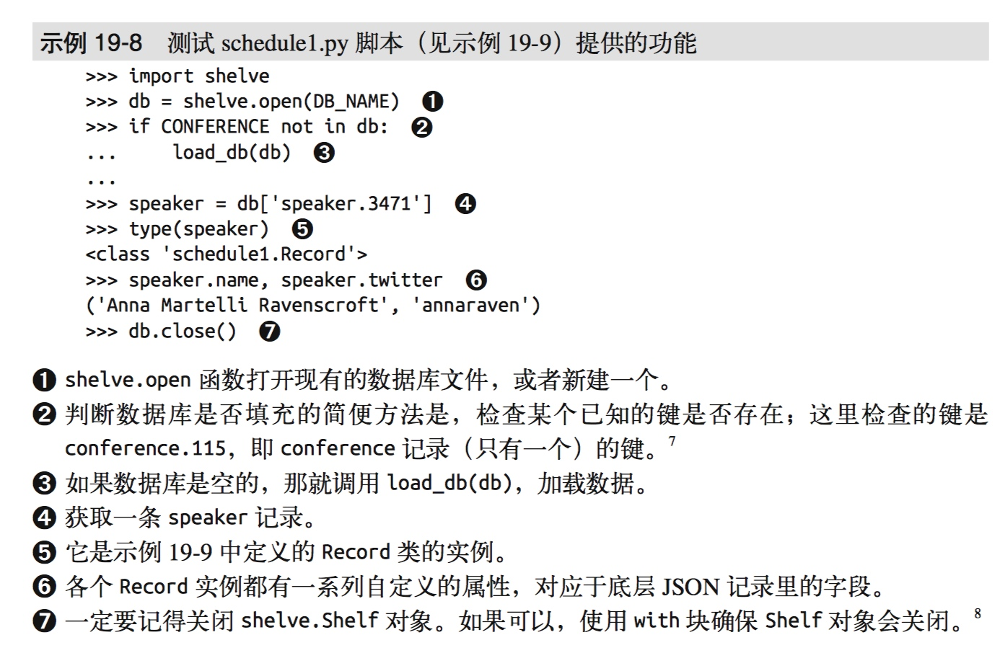
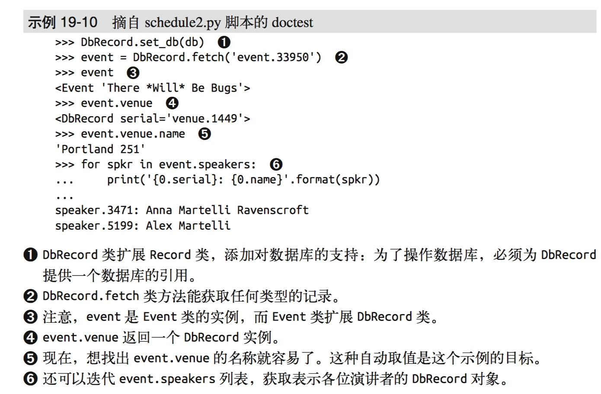
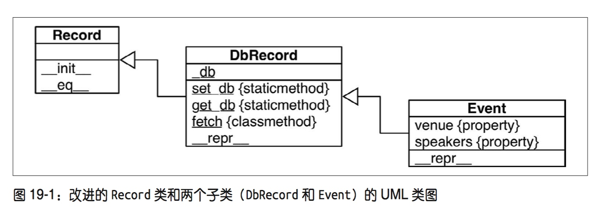

第 17 章：使用 futures 处理并发
抨击线程的往往是系统程序员，他们考虑的使用场景对一般的应用程序员来说，也许一生都不会遇到……应用程序员遇到的使用场景，99% 的情况下只需知道如何派生一堆独立的线程，然后用队列收集结果。—— Michele Simionato
本章主要讨论 Python 3.2 引入的 concurrent.futures 模块，这个库封装了前面引文中 Michele 所述的模式，特别易于使用。
这一章还会介绍 futures 的概念，futures 指一种对象，表示异步执行的操作。这个概念的作用很大，是 corcurrent.futures 模块和 asyncio 包的基础。
示例：网络下载的三种风格
为了高效处理网络 I/O，需要使用并发，因为网络有很高的延迟，所以为了不浪费 CPU 周期去等待，最好在收到网络相应之前做些其他事情。
为了通过代码说明这一点，我写了三个示例程序：从网上下载 20 个国家的国旗图像。第一个示例程序 flag.py 是依序下载的：下载完一个图像，并将其保存在硬盘中之后，才请求下载下一个图像；另外两个脚本是并发下载的：几乎同时请求所有图像，每下载完一个文件就保存一个文件。flags_threadpool.py 脚本使用 concurrent.futures 模块，而 flags_asyncio.py 脚本是会用 asyncio 包。
依序下载的脚本
# flags.py：依序下载的脚本；另外两个脚本会重用其中几个函数
import os
import time
import sys
import requests
POP20_CC = ('CN IN US ID BR PK NG BD RU JP '
'MX PH VN ET EG DE IR TR CD FR').split()
BASE_URL = 'http://flupy.org/data/flags'
DEST_DIR = '/Users/jiayuan/Downloads/'
def save_flag(img, filename):
path = os.path.join(DEST_DIR, filename)
with open(path, 'wb') as fp:
fp.write(img)
def get_flag(cc):
url = '{}/{cc}/{cc}.gif'.format(BASE_URL, cc=cc.lower())
resp = requests.get(url)
return resp.content
def show(text):
print(text, end=' ')
sys.stdout.flush()
def download_many(cc_list):
for cc in sorted(cc_list):
image = get_flag(cc)
show(cc)
save_flag(image, cc.lower() + '.gif')
return len(cc_list)
def main(download_many):
t0 = time.time()
count = download_many(POP20_CC)
elapsed = time.time() - t0
msg = '\n{} flags downloads in {:.2f}s'
print(msg.format(count, elapsed))
测试结果：
>>> main(download_many)
BD BR CD CN DE EG ET FR ID IN IR JP MX NG PH PK RU TR US VN
20 flags downloads in 30.90s
使用 concurrent.futures 模块下载
concurrent.futures 模块的主要特色是 ThreadPoolExecutor 和 ProcessPollExecutor 类，这两个类实现的接口能分别在不同的线程或进程中执行可调用的对象。这两个雷子啊内部维护这一个工作线程或进程池，以及要执行的任务队列。不过，这个接口抽象层级很高，像下载国旗这种简单的案例，无需关心任何实现细节。
# flags_threadpool.py: 使用 futures.ThreadPoolExecutor 类实现多线程下载的脚本
from concurrent import futures
MAX_WORKERS = 20
def download_one(cc):
image = get_flag(cc)
show(cc)
save_flag(image, cc.lower() + '.gif')
return cc
def download_many(cc_list):
workers = min(MAX_WORKERS, len(cc_list))
with futures.ThreadPoolExecutor(workers) as executor:
res = executor.map(download_one, sorted(cc_list)) # 1
return len(list(res)) # 2
测试结果：
>>> main(download_many)
IN VN BD FR DE JP CN ID BR PH EG NG ET MX IR RU US CD PK TR
20 flags downloads in 70.05s
关于这个示例的一些注解：
- 1）map 方法的作用与内置的 map 函数类似，不过 download_one 函数会在多个线程中并发调用；map 方法返回一个生成器，因此可以迭代，获取各个函数返回的值。
- 2）返回获取的结果数量；如果有线程抛出异常，异常会在这里抛出，这与隐式调用 next() 函数从迭代器中获取相应的返回值一样
futures 在哪里
futures 是 concurrent.futures 模块和 asyncio 包的重要组件，作为这两个库的用户，我们有时却见不到 Future。
从 Python 3.4 起，标准库中有两个名为 futures 的类：concurrent.futures.Future 和 asyncio.Future。这两个类的作用相同：两个 futures 类的实例都表示可能已经完成或者尚未完成的延迟计算。这与 Twisted 引擎中的 Deferred 类、Tornado 框架中的 Future 类，以及多个 JavaScript 库中的 Promise 对象类似。
futures 封装待完成的操作，可以放入队列，完成的状态可以查询，得到结果（或抛出异常），后可以获取结果（或异常）。
我们要记住一件事：通常情况下自己不应该创建 futures，而只能由并发框架（concurrent.futures 或 asyncio）实例化。原因很简单：futures 表示终将发生的事情，而确定某件事会发生的唯一方式是执行的时间已经排定。因此，只有排定把某事件交给 concurrent.futures.Executor 子类处理时，才会创建 concurrent.futures.Future 实例。例如，Executor.submit() 方法的参数时一个可调用的对象，调用这个方法后会为传入的可调用对象排期，并返回一个 future。
客户端代码不应该改变 futures 的状态，并发框架在 future 表示的延迟计算结束后会改变 futures 的状态，而我们无法控制计算何时结束。
这两种 future 都有 .done() 方法，这个方法不阻塞，返回值是布尔值，指明 future 链接的可调用对象是否已经执行。客户端代码通常不会询问 future 是否运行结束，而是会等待通知。因此，两个 future 类都有 .add_done_callback() 方法：这个方法只有一个参数，类型是可调用的对象，futures 运行结束后会调用指定的可调用对象。
此外，还有 .result() 方法。在 Future 运行结束后调用的话，这个方法在两个 Future 类中的作用相同：返回可调用对象的结果，或者重新抛出执行可调用的对象时抛出的异常。
但是，如果 Future 没有运行结束，result 方法在两个 Future 类中的行为相差很大。对于 concurrenct.futures.Future 实例来说，调用 f.result() 方法会阻塞调用方所在的线程，直到有结果可返回。此时，result 方法可以接收可选的 timeout 参数，如果在指定的时间内 Future 没有运行完毕，会抛出 TimeoutError 异常。asyncio.Future.result 方法不支持设定超时时间，在那个库中获取 Future 的结果最好使用 yield from 结构。不过，对 concurrent.futures.Future 实例不能这么做。
这两个库中有几个函数会返回 Future，其他函数则使用 Future，以用户易于理解的方式实现自身。使用 Executor.map 方法属于后者：返回值是一个迭代器，迭代器的 __next__ 方法调用各个 Future 的 result 方法，因此我们得到的是各个 Future 的结果，而非 Future 本身。
为了从使用的角度理解 Future，我们可以使用 concurrent.futures.as_completed 函数重写上节的示例，这个函数的参数是一个 Future 列表，返回值是一个迭代器，在 Future 运行结束后产出 Future。
为了使用 futures.as_completed 函数，只需修改 download_many 函数，把较抽象的 executor.map 调用换成两个 for 循环：一个用于创建并排定 Future，另一个用于获取 Future 的结果。同时，我们会添加几个 print 调用，显式运行结束前后的 Future。
# flags_threadpool_ac.py: 把 download_many 函数中的 executor.map 方法换成 executor.submit 方法和 futures.as_completed 函数
def download_many(cc_list):
cc_list = cc_list[:5]
with futures.ThreadPoolExecutor(max_workers=3) as executor:
to_do = []
for cc in sorted(cc_list):
future = executor.submit(download_one, cc)
to_do.append(future)
msg = 'Scheduled for {}: {}'
print(msg.format(cc, future))
results = []
for future in futures.as_completed(to_do):
res = future.result()
msg = '{} result: {!r}'
print(msg.format(future, res))
results.append(res)
return len(results)
测试结果：
>>> main(download_many)
Scheduled for BR: <Future at 0x109a12be0 state=running>
Scheduled for CN: <Future at 0x109a12da0 state=running>
Scheduled for ID: <Future at 0x109a620f0 state=running>
Scheduled for IN: <Future at 0x1099b9710 state=pending>
Scheduled for US: <Future at 0x106ac29e8 state=pending>
IDCN BR <Future at 0x109a12da0 state=finished returned str> result: 'CN'
<Future at 0x109a620f0 state=finished returned str> result: 'ID'
<Future at 0x109a12be0 state=finished returned str> result: 'BR'
IN <Future at 0x1099b9710 state=finished returned str> result: 'IN'
US <Future at 0x106ac29e8 state=finished returned str> result: 'US'
5 flags downloads in 3.81s
注意，在这个示例中调用 future.result() 方法绝不会堵塞，因为 future 由 as_completed 函数产出。
严格来说，我们目前测试的并发脚本都不能并行下载，使用 concurrent.futures 库实现的两个示例收到 GIL 的限制。
有个问题：既然 Python 线程受 GIL 的限制，任何时候都只允许运行一个线程，那个为什么 flags_threadpool.py 脚本的下载速度会比 flags.py 脚本快 5 倍？
阻塞型 I/O 和 GIL
CPython 解释器本身就不是线程安全的，因此有全局解释器锁，一次只允许使用一个线程执行 Python 字节码。因此，一个 Python 进程通常不能同时使用多个 CPU 核心（语言无关，解释器相关）。
编写 Python 代码时无法控制 GIL，不过，执行耗时的任务时，可以使用一个内置的函数或一个使用 C 语言编写的扩展释放 GIL。
然而，标准库中所有执行阻塞型 I/O 操作的函数，在等待操作系统返回结果时都会释放 GIL。这意味着在 Python 语言这个层次上可以使用多线程，而 IO 密集型 Python 程序能从中受益：一个 Python 线程等待网络响应时，阻塞型 IO 函数会释放 GIL，再运行一个线程。
Python 标准库中所有阻塞型 IO 函数都会释放 GIL，允许其他线程运行。因此，尽管有 GIL，Python 线程还是能在 IO 密集型应用中发挥作用。
下面加单说明如何在 CPU 密集型作业中使用 concurrent.futures 模块轻松绕开 GIL。
使用 concurrent.futures 模块启动进程
concurrent.futures 模块实现的是真正的并行计算，因为它使用 ProcessPoolExecutor 类把工作分配给多个 Python 进程处理，因此，如果需要做 CPU 密集型处理，使用这个模块能绕开 GIL，利用所有可用的 CPU 核心。
ProcessPoolExecutor 和 ThreadPoolExecutor 类都实现了通用的 Executor 接口，因此使用 concurrent.futures 模块能轻松地把基于线程的方案转换成基于进程的方案。
下载国旗的示例或其他 IO 密集型作业使用 ProcessPoolExecutor 类得不到任何好处，因为对于 CPU 密集型的处理来说，不吭呢要求使用超过 CPU 数量的进程，而对于 IO 密集型来说，可以在一个 ThreadPoolExecutor 实例中使用 10 个、100 个或 1000 个线程，最佳线程数取决于做的是什么事，以及可用内存是多少，因此要自习测试才能找到最佳的线程数。
ProcessPoolExecutor 的价值体现在 CPU 密集型作业上。有两个 CPU 密集型的脚本：
- arcfour_futures.py: 这个脚本纯粹使用 Python 实现 RC4 算法；
- sha_futures.py: 这个脚本使用标准库中的 haslib 模块（使用 OpenSSL 库实现）实现 SHA-256 算法。
这两个脚本除了显示汇总结果外，没有使用 IO，测试的结果如下：

可以看出，对加密算法来说，使用 ProcessPoolExecutor 类派生 4 个工作进程后（如果有 4 个 CPU 核心的话），性能可能提高两倍。
如果使用 Python 处理 CPU 密集型工作，应该试试 PyPy，使用 PyPy 运行上面脚本，速度快乐 3.8~5.1 倍。
实现 Executor.map 方法
下面通过一个演示程序来研究线程池的行为，这个程序会创建一个包含 3 个 worker 的线程池，运行 5 个可调用对象，输出带有时间戳的消息。
若想并发运行多个可调用对象，最简单的方式是使用 Executor.map 方法。Executor.map 函数易于使用，不过有个特性可能有用，也可能没用，具体情况取决于需求：这个函数返回结果的顺序与调用开始的顺序一致。如果第一个调用生成结果用时 10 秒，而其他调用只用 1 秒，代码会阻塞 10 秒，获取 map 方法返回的生成器产出的第一个结果。在此之后，获取后续结果时不会阻塞，因为后续的调用已经结束。如果必须等到获取所有结果后再处理，这种行为没有问题；不过，通常更可取的做法是，不管提交的顺序，只要有结果就获取。为此，要把 Executor.submit 方法和 futures.as_completed 函数结合起来使用。
executor.submit 和 futures.as_completed 这个组合比 executor.map 更灵活，因为 submit 方法能处理不同的可调用对象和参数，而 executor.map 只能处理参数不同的同一个可调用对象。此外，传给 futures.as_completed 函数的 futres 集合可以来自多个 Executor 实例，例如一些由 ThreadPoolExecutor 实例创建，另一些由 ProcessPoolExecutor 实例创建。
显示下载进度并处理错误
之前的示例脚本中没有处理错误，这么做是为了便于阅读和比较三种方案（依序、多线程和异步）的结构。
这三个示例在负责下载一个文件的函数（download_one）中使用相同的策略处理 HTTP 404 错误，其他异常则向上冒泡，交给 download_many 函数处理。
# flags2_sequential.py: 负责下载的基本函数；flags2_threadpool.py 脚本重用了这两个函数
def get_flag(base_url, cc):
url = '{}/{cc}.gif'.format(base_url, cc=cc.lower())
resp = requests.get(url)
if resp.status_code != 200:
resp.raise_for_status()
return resp.content
def download_one(cc, base_url, verbose=False):
try:
image = get_flag(base_url, cc)
except requests.exceptions.HTTPError as exc:
res = exc.response
if res.status_code == 404:
status = HTTPSatus.not_fount
msg = 'not found'
else:
raise
else:
save_flag(image, cc.lower() + '.gif')
status = HTTPStatus.ok
msg = 'OK'
if verbose:
print(cc, msg)
return Result(status, cc)
Python 线程特别适合 IO 密集型应用，concurrent.futures 模块大大简化了某些使用场景下 Python 线程的用法。下面讨论不适合使用 ThreadPoolExecutor 或 ProcessPoolExecutor 类时，有哪些替代方案。
杂谈
concurrent.futures 包把线程、进程和队列视作服务的基础设施，不用自己动手直接处理。当然，这个包针对的是简单的作业，也就是所谓的「高度并行」问题，编写应用（而非操作系统或数据库服务器）时，遇到的大部分并发问题都属于这一种。
GIL 简化了了 CPython 解释器和 C 语言扩展的实现，得益于 GIL，Python 有很多 C 语言扩展。GIL 并不会导致 Python 线程没有用武之地，因为标准库中每一个阻塞型 IO 函数都会释放 GIL，Python 线程特别适合在 IO 密集型系统中使用。
第 18 章：使用 asyncio 包处理并发
并发是指一次处理多件事；
并行是指一次做多件事；
二者不同，但是有联系；
一个关于结构，一个关于执行；
并发用于制定方案，用来解决可能并行的问题。
—— Rob Pike（Go 语言的创造者之一）
真正的并行需要多个核心。现代的笔记本电脑有 4 个 CPU 核心，但是通常不经意间就有超过 100 个进程同时运行。因此，实际上大多数过程都是并发处理的，而不是并行处理。
本章介绍 asyncio 包，这个包使用事件循环驱动的协程实现并发。asyncio 大量使用 yield from 表达式，因此与 Python 旧版不兼容。
本章讨论以下话题：
- 对比一个简单的多线程程序和对应的 asyncio 版，说明多线程和异步任务之间的关系
- asyncio.Futures 类与 concurrent.futures.Future 类之间的区别
- 第 17 章中下载国旗的那些示例的异步版
- 摒弃线程或进程，如何使用异步编程管理网络应用中的高并发
- 在异步编程中，与回调相比，协程显著提升性能的方式
- 如何把阻塞的操作交给线程池处理，从而避免阻塞事件循环
- 使用 asyncio 编写服务器，重新审视 Web 应用对高并发的处理方式
- 为什么 asyncio 已经准备好了对 Python 生态系统产生重大影响
线程与协程对比
有一次讨论线程和 GIL 时，Michele Simionato 发布了一个简单但有趣的示例：在长时间计算的过程中，使用 multiprocessing 包在控制台中显示一个由 ASCII 字符「\/-\」构成的动画旋转指针。
我们改写了 Simionato 的示例，一个借由 threading 模块使用线程实现，一个借由 asyncio 包使用协程实现。我们这么做是为了让你对比两种实现，理解如何不使用线程来实现并发行为。
# spinner_thread.py: 通过线程以动画形式显示文本格式旋转指针
import threading
import itertools
import time
import sys
class Signal:
go = True
def spin(msg, signal):
write, flush = sys.stdout.write, sys.stdout.flush
for char in itertools.cycle('|/-\\'):
status = char + ' ' + msg
write(status)
flush()
write('\x08' * len(status)) # 这是显示文本动画的诀窍所在：使用退格符（\x08）把光标移回来
time.sleep(.1)
if not signal.go:
break
write(' ' * len(status) + '\x08' * len(status)) # 使用空格键清除状态信息，把光标移回开头
def slow_function():
# 假装等待 I/O 一段时间
time.sleep(3) # 调用 sleep 函数会阻塞主线程，不过一定哟啊这么做，以便释放 GIL，创建从属线程
return 42
def supervisor():
signal = Signal()
spinner = threading.Thread(
target=spin,
args=('thinking', signal)
)
print('spinner object: ', spinner)
spinner.start()
result = slow_function()
signal.go = False
spinner.join()
return result
def main():
result = supervisor()
print('Answer: ', result)
if __name__ == '__main__':
main()
注意，Python 没有提供终止线程的 API，这是有意为之的。若想关闭线程，必须给线程发送消息。这里我们使用的是 signal.go 属性：在主线程中把它设置为 False 后，spinner 线程最终会注意到，然后干净地退出。
下面来看如何使用 @asyncio.coroutine 装饰器替代线程，实现相同的行为。asyncio 包使用的「协程」是较严格的定义。适合 asyncio API 的协程在定义体中必须使用 yield from，而不能使用 yield。此外，适合 asyncio 的协程要由调用方驱动，并由调用方通过 yield from 调用；或者把协程传给 asyncio 包中的某个函数，例如 asyncio.async(...) 和本章要介绍的其他函数，从而驱动协程。最后，@asyncio.coroutine 装饰器应该用在协程上，如下述示例所示。
# spinner_asyncio.py: 通过协程以动画形式显示文本式旋转指针
import asyncio
import itertools
import sys
@asyncio.coroutine
def spin(msg):
write, flush = sys.stdout.write, sys.stdout.flush
for char in itertools.cycle('|/-\\'):
status = char + ' ' + msg
write(status)
flush()
write('\x08' * len(status))
try:
yield from asyncio.sleep(.1)
except asyncio.CancelledError:
break
write(' ' * len(status) + '\x08' * len(status))
@asyncio.coroutine
def slow_function():
# 假装等待 I/O 一段时间
yield from asyncio.sleep(3)
return 42
@asyncio.coroutine
def supervisor():
spinner = asyncio.async(spin('thinking!'))
print('spinner object: ', spinner)
result = yield from slow_function()
spinner.cancel()
return result
def main():
loop = asyncio.get_event_loop()
result = loop.run_until_complete(supervisor())
loop.close()
print('Answer: ', result)
if __name__ == '__main__':
main()
若非想阻塞主线程，从而冻结事件循环或整个应用，否则不要在 asyncio 协程中使用 time.sleep(...)。如果协程需要在一段时间内什么也不做，应该使用 yield from asyncio.sleep(DELAY)。
使用 @asyncio.coroutine 装饰器不是强制要求，但是强烈建议这么做，因为这样能在一众普通的函数中把协程凸显出来，也有助于调试：如果还没从中产出值，协程就被垃圾回收了（意味着有操作未完成，因此有可能是个缺陷），那就可以发出警告。这个装饰器不会预激协程。
上面两个例子中的 supervisor 实现之间的主要区别概述如下：
- asyncio.Task 对象差不多与 threading.Thread 对象等效，「Task 对象像是实现协作式多任务库（如 gevent）中的绿色线程（green thread）」。
- Task 对象用于驱动协程，Thread 对象用于调用可调用的对象。
- Task 对象不由自己手动实例化，而是通过把协程传给 asyncio.async(...) 函数或 loop.create_task(...) 方法获取。
- 获取的 Task 对象已经排定了运行时间；Thread 实例则必须调用 start 方法，明确告知让它运行。
- 在线程版 supervisor 函数中，slow_function 函数是普通的函数，直接由线程调用。在异步版 supervisor 函数中，slow_function 函数时协程，由 yield from 驱动。
- 没有 API 能从外部终止线程，因为线程随时可能被终端，导致系统处于无效状态。如果想终止任务，可以使用 Task.cancel() 实例方法，在协程内部抛出 CancelledError 异常。协程可以在暂停的 yield 处捕获这个异常，处理终止请求。
- supervisor 协程必须在 main 函数中由 loop.run_until_complete 方法执行。
使用线程编程，因为调度程序任何时候都能终端线程，所以必须记住保留锁，去保护程序中的重要部分，防止多步操作在执行的过程中终端，防止数据处于无效状态。而协程默认会做好全方位保护，以防止中断。我们必须显式产出才能让程序的余下部分运行。对协程来说，无需保留锁，在多个线程之间同步操作，协程自身就会同步，因为在任意时刻只有一个协程运行。想交出控制权时，可以使用 yield 或 yield from 把控制权交还给调度程序。这就是能够安全地取消协程的原因：按照定义，协程只能在暂停的 yield 处取消，因此可以处理 CancelledError 异常，执行清理操作。
asyncio.Future：故意不阻塞
asyncio.Future 类与 concurrent.futures.Future 类的接口基本一致，不过实现方式不同，不可以互换。
期物只是调度执行某物的结果，在 asyncio 包中， BaseEventLoop.create_task() 方法接收一个协程，排定它的运行时间，然后返回一个 asyncio.Task 实例——也是 asyncio.Future 类的实例，因为 Task 是 Future 的子类，用于包装协程。这与调用 Executor.submit() 方法创建 concurrent.futures.Future 实例是一个道理。
使用 yield from 处理期物，等待期物运行完毕这一步无需我们关心，而且不会阻塞事件循环，因为在 asyncio 包中，yield from 的作用是把控制权交还给事件循环。
注意，使用 yield from 处理期物与使用 add_done_callback 方法处理协程的作用一样：延迟的操作结束后，事件循环不会触发回调对象，而是设置期物的返回值；而 yield from 表达式则在暂停的协程中产生返回值，回复执行协程。
总之，因为 asyncio.Future 类的目的是与 yield from 一起使用，所以通常不需要使用以下方法：
- 无需调用 my_future.add_done_callback()，因为可以直接把像在期物运行结束后执行的操作放在协程中 yield from my_future 表达式的后面。这是协程的一大优势：协程时可以暂停和恢复的函数。
- 无需调用 my_future.result()，因为 yield from 从期物中产出的值就是结果（例如 result = yield from my_future）。
第 19 章：动态属性和特性
在 Python 中，数据的属性和处理数据的方法统称「属性」（attribute）。其实，方法只是「可调用」的「属性」。除了这二者之外，我们还可以创建「特性」（property），在不改变类接口的前提下，使用「存取方法」（即读值方法和设值方法）修改数据属性。这与「统一访问原则」相符：
不管服务是由存储还是计算机实现的，一个模块提供的所有服务都应该通过统一的方式使用。
除了特性，Python 还提供了丰富的 API，用于控制属性的访问权限，以及实现动态属性。使用点号访问属性时（如 obj.attr），Python 解释器会调用特殊的方法（如 __getattr__ 和 __setattr__）计算属性。用户自己定义的类可以通过 __getattr__ 方法实现「虚拟属性」，当访问不存在的属性时（如 obj.no_such_attribute），即时计算属性的值。
动态创建属性是一种元编程。
使用动态属性转化数据
在接下来的几个示例中，我们要使用动态属性处理 O'Reilly 为 OSCON 2016 大会提供的 JSON 格式数据源。
数据集：http://www.oreilly.com/pub/sc/osconfeed
我们编写的第一个脚本只用于下载那个 OSCON 数据源。示例 19-2 没有用到元编程。
# 示例 19-2 osconfeed.py: 下载 osconfeed.json
from urllib.request import urlopen
import warnings
import os
import json
URL = 'http://www.oreilly.com/pub/sc/osconfeed'
JSON = 'data/osconfeed.json'
def load():
if not os.path.exists(JSON):
msg = 'downloading {} to {}'.format(URL, JSON)
warnings.warn(msg)
with urlopen(URL) as remote, open(JSON, 'wb') as local:
local.write(remote.read())
with open(JSON) as fp:
return json.load(fp)
有了 19-2 中的代码，我们可以审查数据源中的任何字段。

使用动态属性访问 JSON 类数据
示例 19-2 十分简单，不过，feed['Schedule']['speakers'][-1]['name'] 这种句法很冗长。在 JavaScript 中，可以使用 feed.Schedule.events[40].name 来获取那个值。在 Python 中，可以实现一个近似字典的类，达到同样的效果。我自己实现了 FrozenJSON 类，比大多数实现都简单，因为只支持读取，即只能访问数据。不过，这个类能递归，自动处理嵌套的映射和列表。

FrozenJSON 类的关键是 __getattr__ 方法。我们要记住重要的一点，仅当无法使用常规的方法获取属性（即在实例、类或超类中找不到指定的属性），解释器才会调用特殊的 __getattr__ 方法。
如示例 19-5 所示，FrozenJSON 类只有两个方法（__init__ 和 __getattr__）和一个实例属性 __data。因此，尝试获取其他属性会触发解释器调用 __getattr__ 方法。这个方法首先查看 self._data 字典中有没有指定名称的属性（不是键），这样 FrozenJSON 实例便可以处理字典中的所有方法，例如把 items 方法委托给 self.__data.items() 方法。如果 self.__data 没有指定名称的属性，那么 __getattr__ 方法一那个名称为键，从 self.__data 中获取一个元素，传给 FrozenJSON.build 方法。这样就能深入 JSON 数据的嵌套结构，使用类方法 build 把每一层嵌套转化成一个 FrozenJSON 实例。
# explore0.py: 把一个 JSON 数据集转换成一个嵌套着 FrozenJSON
# 对象、列表和简单类型的 FrozenJSON 对象
from collections import abc
class FrozenJSON:
"""一个只读接口，使用属性表示法访问 JSON 类对象"""
def __init__(self, mapping):
self.__data = dict(mapping)
def __getattr__(self, name):
if hasattr(self.__data, name):
return getattr(self.__data, name)
else:
return FrozenJSON.build(self.__data[name])
@classmethod
def build(cls, obj):
if isinstance(obj, abc.Mapping):
return cls(obj)
elif isinstance(obj, abc.MutableSequence):
return [cls.build(item) for item in obj]
else:
return obj
解释一下 build 这个类方法：如果 obj 是 Mapping，那就构造一个 FrozenJSON 对象；如果是 MutableSequence 对象，必然是列表，因此，我们把 obj 中每个元素递归地传给 .build() 方法，构造一个列表；如果既不是字典也不是列表，那么原封不动地返回元素。
注意，我们没有缓存或转换原始数据源。在迭代数据源的过程中，嵌套的数据结构不断被转换成 FrozenJSON 对象。这么做没问题，因为数据集不大，而且这个脚本只用于访问或转换数据。
处理无效的属性名
FrozenJSON 类有个缺陷：没有对名称为 Python 关键字的属性做特殊处理。
FrozenJSON 类的目的是为了便于访问数据，因此更好的方法是检查传给 FrozenJSON.__init__ 方法的映射中是否有键的名称为关键字，如果有，那么在键名后加上 _，然后通过 xxx.class_ 这样的方式读取。
解决方法：
class FrozenJSON:
"""一个只读接口，使用属性表示法访问 JSON 类对象"""
def __init__(self, mapping):
self.__data = {}
for key, value in mapping.items():
if keyword.iskeyword(key):
key += '_'
self.__data[key] = value
对动态属性的名称做了一些处理之后，我们要分析 FrozenJSON 类的另一个重要功能——类方法 build 的逻辑。这个方法吧嵌套结构转换成 FrozenJSON 实例或 FrozenJSON 实例列表，因此 __getattr__ 方法使用这个方法访问属性时，能为不同的值返回不同类型的对象。
使用 __new__ 方法以灵活的方式创建对象
除了在类方法实现 build 的逻辑之外，还可以在 __new__ 方法中实现。
我们通常把 __init__ 称为构造方法，这是从其他语言借鉴过来的术语。其实，用于构造实例的是特殊方法 __new__：这是个类方法（使用特殊方式处理，因此不必使用 @classmethod 装饰器），必须返回一个实例。返回的实例会作为第一个参数（即 self）传给 __init__ 方法。因为调用 __init__ 方法时要传入实例，而且禁止返回任何值，所以 __init__ 方法其实是「初始化方法」，真正的构造方法时 __new__。我们几乎不需要自己编写 new 方法，因为从 object 类继承的实现已经足够了。
刚才说明的过程，即从 new 方法到 init 方法，是最常见的，但不是唯一的。new 方法也可以返回其他类的实例，此时，解释器不会调用 init 方法。
也就是说，Python 构建对象的过程可以使用下述伪代码描述：
def object_maker(the_class, some_arg):
new_object = the_class.__new__(some_arg)
if isinstance(new_object, the_class):
the_class.__init__(new_object, some_arg)
return new_object
# 下述两个语句的作用基本等效
x = Foo('bar')
x = object_maker(Foo, 'bar')
下面是 FrozenJSON 的另一个版本，把之前在类方法 build 中的逻辑移动到了 new 方法中。
# explore2.py: 使用 new 方法取代 build 方法，构建可能是也可能不是 FrozenJSON 实例的新对象
from collections import abc
import keyword
class FrozenJSON:
"""一个只读接口，使用属性表示法访问 JSON 类对象"""
def __init__(self, mapping):
self.__data = {}
for key, value in mapping.items():
if keyword.iskeyword(key):
key += '_'
self.__data[key] = value
def __getattr__(self, name):
if hasattr(self.__data, name):
return getattr(self.__data, name)
else:
return FrozenJSON(self.__data[name])
def __new__(cls, obj):
if isinstance(obj, abc.Mapping):
return super().__new__(cls)
elif isinstance(obj, abc.MutableSequence):
return [cls.build(item) for item in obj]
else:
return obj
new 方法的第一个参数时类，因为创建的对象通常是那个类的实例。所以，在 FrozenJSON.__new__ 方法中，super().__new__(cls) 表达式会调用 object.__new__(FrozenJSON)，而 object 类构建的实例其实是 FrozenJSON 实例，即那个实例的 __class__ 属性存储的是 FrozenJSON 类的引用。
使用 shelve 模块调整 OSCON 数据源的结构
pickle 是 Python 对象序列化格式的包，shelve 模块提供了 pickle 存储方式。
shelve.open 高阶函数返回一个 shelve.Shelf 实例，这是简单的键值对象数据库，背后由 dbm 模块支持，具有下述特点：
- shelve.Shelf 是 abc.MutableMapping 的子类，因此提供了处理映射类型的重要方法；
- 此外，shelve.Shelf 类还停工了几个管理 I/O 的方法，如 sync 和 close；它也是一个上下文管理器；
- 只要把新值赋予键，就会保存键和值；
- 键必须是字符串；
- 值必须是 pickle 模块能处理的对象。
现在值得关注的是，shelve 模块为识别 OSCON 的日程数据提供了一种简单有效的方式。我们将从 JSON 文件中读取所有记录，将其存在一个 shelve.Shelf 对象中，键由记录类型和编号组成（例如，'event.33050'），而值使我们即将定义的 Record 类的实例。

# schedule1.py: 访问保存在 shelve.Shelf 对象里的 OSCOn日程数据
import warnings
import osconfeed
DB_NAME = 'data/schedule1_db'
CONFERENCE = 'conference.115'
class Record:
def __init__(self, **kwargs):
self.__dict__.update(kwargs)
def load_db(db):
raw_data = osconfeed.load()
warnings.warn('loading ' + DB_NAME)
for collections, rec_list in raw_data['Schedule'].items():
record_type = collection[:-1]
for record in rec_list:
key = '{}.{}'.format(record_type, record['serial'])
record['serial'] = key
db[key] = Record(**record)
Record.__init__ 方法展示了一个流行的 Python 技巧。我们知道，对象的 __dict__ 属性中存储着对象的属性——前提是类中没有声明 __slots__ 属性。因此，更新实例的 dict 属性，把值设为一个映射，能快速地在那个实例中创建一堆属性。
像上面那样调整日程和数据集之后，我们可以扩展 Record 类，让它提供一个有用的服务：自动获取 event 记录引用的 venue 和 speaker 记录。这与 Django ORM 访问 models.ForeignKey 字段时所做的事类似：得到的不是键，而是链接的模型对象。
使用特性获取链接的记录
下一个版本的目标是，对于从 Shelf 对象中获取的 event 记录来说，读取它的 venue 或 speakers 属性时返回的不是编号，而是完整的记录对象，用法如下所示：


上图绘出了本节要分析的几个类。
- Record
__init__ 方法与 schedule1.py 脚本中的一样；为了辅助测试，添加了 __eq__ 方法；
- DbRecord
- Record 类的子类，添加了
__db 类属性，用于设置和获取 __db 属性的 set_db 和 get_db 静态方法，用于从数据库中获取记录的 fetch 类方法，以及辅助调试和测试的 __repr__ 实例方法；
- Event
- DBRecord 类的子类，添加了用于获取所链接记录的 venue 和 speakers 属性，以及特殊的 repr 方法。
DbRecord.__db 类属性的作用是存储打开的 shelve.Shelf 数据库引用，以便在需要使用数据库的 DbRecord.fetch 方法以及 Event.venue 和 Event.speakers 属性中使用。我把 __db 设为私有类属性，然后定义了普通的读值方法和设值方法，以防不小心覆盖 __db 属性的值。基于一个重要的原因，我没有使用特性去管理 __db 属性：特性是用于管理实例属性的类属性。